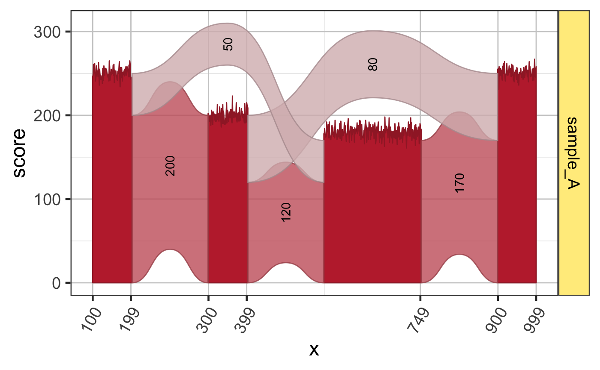

Prepare Sashimi plot data
prepareSashimi(flatExonsByGene = NULL, filesDF = NULL, gene, sample_id = NULL, minJunctionScore = 10, gapWidth = 200, addGaps = TRUE, baseline = 0, compressGR = TRUE, ref2c = NULL, gap_feature_type = "intron", default_feature_type = "exon", feature_type_colname = "feature_type", exon_label_type = c("none", "repel", "mark"), junc_label_type = c("repel", "mark", "none"), return_data = c("ggCov", "ggJunc", "ggSashimi", "covDF", "juncDF", "ref2c", "all"), junc_color = alpha2col("goldenrod3", 0.7), junc_fill = alpha2col("goldenrod1", 0.4), doStackJunctions = TRUE, coord_method = c("coord", "scale", "none"), scoreFactor = 1, scoreArcFactor = 0.2, scoreArcMinimum = 100, covGR = NULL, juncGR = NULL, do_shiny_progress = FALSE, verbose = FALSE, ...)
| flatExonsByGene | GRangesList named by gene, whose GRanges elements are flattened, disjoint, non-overlapping genomic ranges per gene. |
|---|---|
| filesDF | data.frame with columns |
| gene | character string of the gene to prepare, which must be
present in |
| gapWidth | numeric value of the fixed width to use for
gaps (introns) between exon features. If |
| addGaps | logical indicating whether to include gap regions
in the coverage plot, for example including introns or intergenic
regions. When |
| baseline | numeric vector named by |
| compressGR | logical indicating whether to compress GRanges
coordinates in the output data, where gaps/introns are set
to a fixed width. When |
| ref2c | list object output from |
| gap_feature_type | the default feature_type value to use for
gaps when |
| doStackJunctions | logical indicating whether to stack
junction arcs at each end, this argument is passed to
|
| covGR | GRanges object containing coverage data in columns
stored as NumericList class, where |
| juncGR | GRanges object containing splice junctions, where
|
| do_shiny_progress | logical indicating whether to send
progress updates to a running shiny app, using the
|
| verbose | logical indicating whether to print verbose output. |
| ... | additional arguments are passed to |
list containing ggSashimi a ggplot2 graphical object
containing a full Sashimi plot; ggCov the RNA-seq coverage
subset of the Sashimi plot; ggJunc the splice junction
subsset of the Sashimi plot; ref2c the output of
make_ref2compressed() used for ggplot2 coordinate
visualization; covDF, juncDF data.frame objects
with the raw data used to create ggplot2 objects;
covGR, juncGR the GRanges objects used to create
the data.frames; gr the GRanges object representing the
exons for the gene of interest; juncLabelDF the data.frame
containing exon label coordinates used to add labels to
the splice junction arcs.
This function is the workhorse function used to produce Sashimi plots, and is intended to be a convenient wrapper function for several other individual functions.
At a minimum, a Sashimi plot requires three things:
Exons, usually from a gene of interest.
RNA-seq coverage data.
Splice junction data.
There is some required pre-processing before running
prepareSashimi():
Prepare flattened exons by gene using flattenExonsByGene()
and corresponding data, including exonsByGene, cdsByGene,
and tx2geneDF. Verify the gene exon model data using
gene2gg().
Find file paths, or web URLs, for a set of bigWig coverage
files, representing RNA-seq coverage for each strand, for
the samples of interest. Test the coverage data using
getGRcoverageFromBw() for a small set of GRanges data.
Find file paths, or web URLs, for a set of BED6 or BED12
format files, note that it cannot currently use bigBed format
due to limitations in the rtracklayer package.
Test the splice junction data using rtracklayer::import()
for a small range of GRanges features, then send the data
to spliceGR2junctionDF() to prepare a data.frame summary.
The basic input for coverage and junction data is a data.frame,
which defines each file path or url, the type of data
"bw" or "junction", and the biological sample "sample_id".
Any file path compatible with rtracklayer::import() will
work, including web URLs and local files. When using a web URL
you may need to use "https://" format to force the use
of secure web requests, but this requirement varies by country.
Other RNA-seq functions: getGRcoverageFromBw
Other jam plot functions: bgaPlotly3d,
factor2label, gene2gg,
grl2df, plotSashimi,
stackJunctions
Other splicejam core functions: exoncov2polygon,
gene2gg, grl2df,
make_ref2compressed,
plotSashimi
# The active example below uses sample data suppressPackageStartupMessages(library(GenomicRanges)); data(test_exon_gr); data(test_junc_gr); data(test_cov_gr); filesDF <- data.frame(url="sample_A", type="coverage_gr", sample_id="sample_A"); sh1 <- prepareSashimi(GRangesList(TestGene1=test_exon_gr), filesDF=filesDF, gene="TestGene1", covGR=test_cov_gr, juncGR=test_junc_gr); plotSashimi(sh1);#> #>